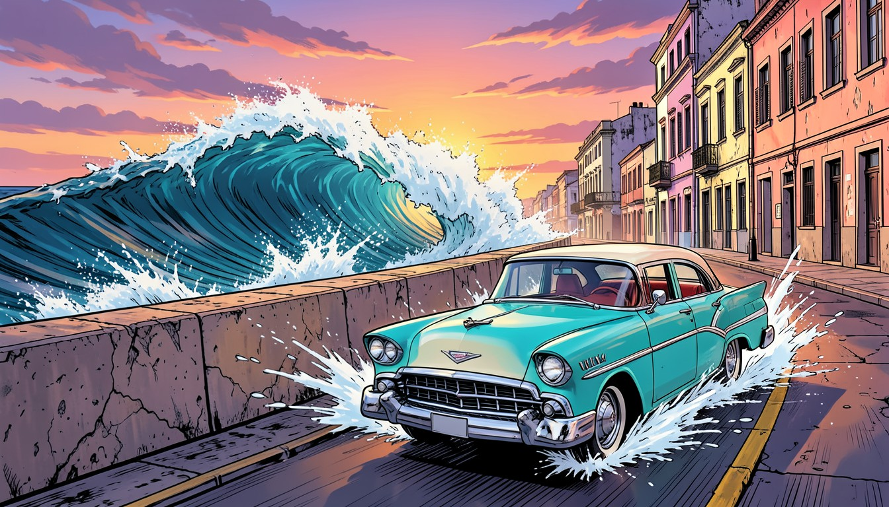
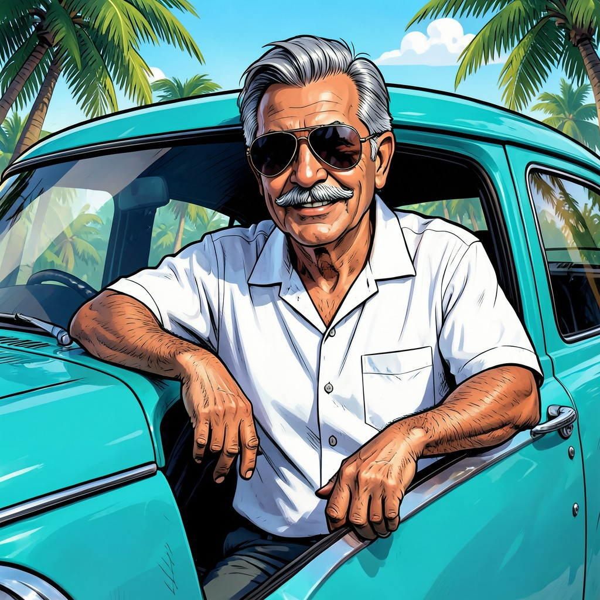
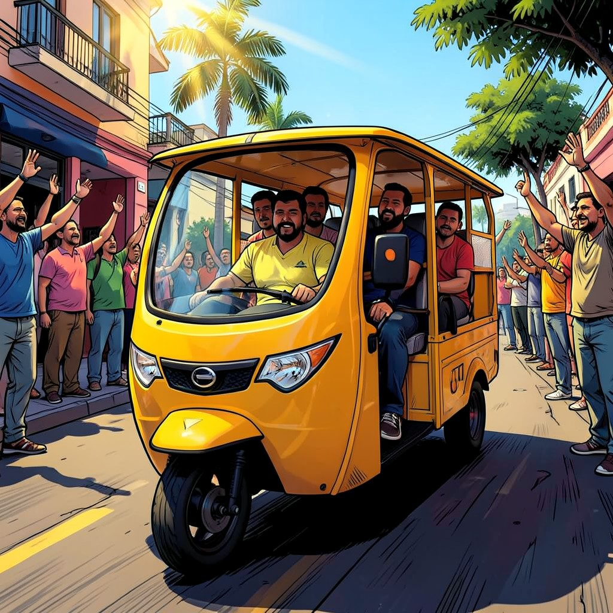

Almendrón
Cromo de 1956 y una ola del Malecón en el parabrisas.
Cuba entera, a tamaño real, para manejarla de punta a punta. Cada calle sale del mapa y la ciudad se levanta mientras avanzas.
El mapa es el país
No hay una Habana de juguete ni un pueblo inventado. Las calles, los edificios y la costa vienen de OpenStreetMap; las lomas, del relieve satelital. Sales del Capitolio, coges la Carretera Central y sigues hasta Baracoa.
Lo que vas a ver
El Capitolio y el Malecón, las calles de piedra de Trinidad, las lomas de Santiago, una parada en la Plaza de la Revolución. Y de noche, otra ciudad.






Lo que vas a manejar
Los carros que de verdad andan por la calle: almendrones de los cincuenta, Ladas, triciclos eléctricos, metroguaguas, motos con sidecar. El tráfico circula por la red de calles de la provincia donde estés.

Cromo de 1956 y una ola del Malecón en el parabrisas.
Cuadrado, rojo e inmortal.
Seis pasajeros y una batería.
Cómo se hace
El juego no trae una ciudad modelada: trae datos y reglas. La isla se construye una vez en tu máquina y cada cuadra se arma cuando llegas a ella, igual todas las veces.
OpenStreetMap da las calles, los edificios, los puentes y la costa. Copernicus da la altura del suelo.
Cada zona tiene su receta de edificios. Las avenidas se juntan, las esquinas se redondean, las aceras suben 15 cm y los parques echan árboles.
Cada celda se arma mientras manejas, sobre manifoldx. Las ruedas pisan los mismos triángulos que ves.
# la primera vez arma la isla en tu máquina
$ contravia play
# o salta a Santiago
$ manifoldx emit teleport lat=20.02 lon=-75.83
Una demo técnica para estudiantes y una prueba de fuerza para manifoldx. Por ahora, en funciones privadas.